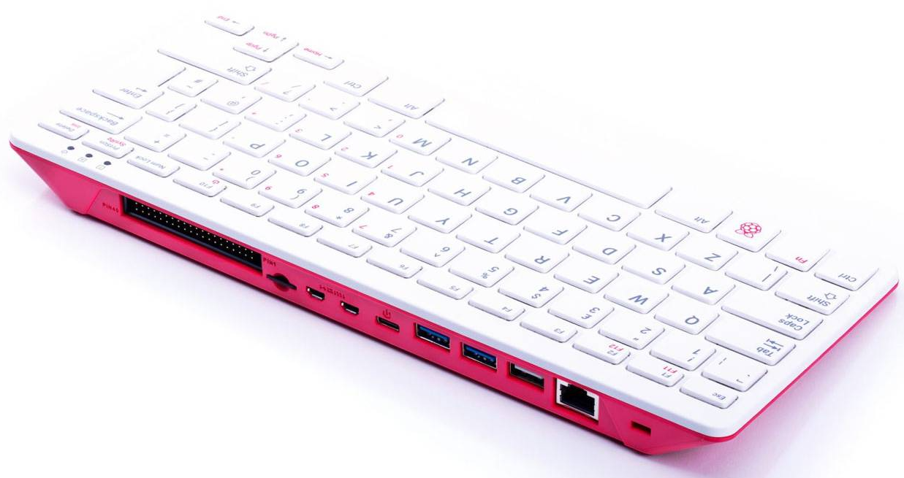

It’s secretly a computer (a raspberry pi), inside an awesome keyboard case.
We are using raspberry pi’s to run nearly everything in this booth.
Contribute to the kubernetes project! As soon as you become a contributor, we’ll give you an ii keyboard and mouse.
Practically, this involves submitting a pull request to a kubernetes repo and having it merged, then sharing with us the proof of this merge.
There are multiple ways to contribute. Examples include:
The Kubernetes community encourages contributions from anyone, regardless of technical skill level, with ample resources to better understand the project.
If you are interested in the ii keyboard, and don’t know where to start, come talk to us! We are happy to help!